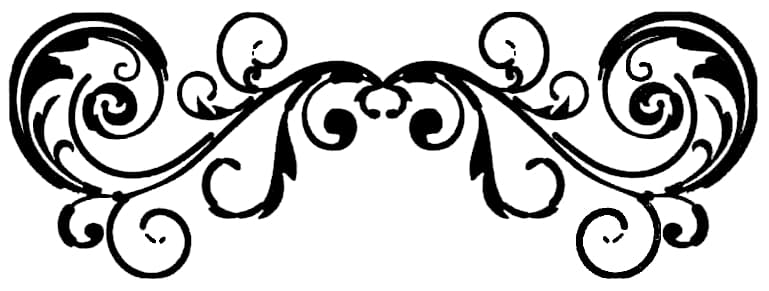

Szekely Ujsag, nr. 28 din 15-21.07.2010
Csont
A II-a ediție a Insulei Secuiești
În intervalul 9-10 iulie, s-a desfășurat: la Băile Fortyogo ediția a II-a a Insulei Secuiești. Evenimentul a fost organizat de reprezentanții Mișcării de Tineret 64 de Comitate (HVIM). Lokodi Ferenc Attila, președintele organizațiilor din Partium și Transilvania ale HVIM, ne-a declarat că Insula Secuiască reprezintă continuarea, în Transilvania, a tradiției de 10 ani a festivalului Sziget (n.t. - Insula) din Ungaria. Este vorba despre un festival al întregii națiuni - a precizat Lokodi -, având în vedere că și HVIM este cea mai amplă mișcare maghiară de tineret, o mișcare a întregii națiuni. Tocmai din acest motiv se pune un accent deosebit pe organizarea periodică, în Transilvania, Voivodina și Ținutul de Sus - părți de națiune rupte - a unor festivaluri de edificare a comunității și de dezvoltare a conștiinței. Conform proiectelor, anul viitor vor fi organizate astfel de manifestări și în zonele locuite de grupuri etnice dispersate, respectiv la Călata și în Partium. Este foarte importantă susținerea acelor comunități ale căror drepturi comunitare maghiare sunt lezate. Potrivit lui Lokodi Ferenc, aceste festivaluri atrag tot mai mulți conaționali.
Referitor la programul manifestării, Lokodi a menționat; au fost susținute expuneri istorice pe teme care, în dictatura ceaușistă și în ultimii 20 de ani, au fost trecute sub tăcere în mod nedrept. Pe lângă acestea, au avut loc activități de dezvoltare a conștiinței și activități sportive, în cadrul cărora au fost prezentate activități tradiționale maghiaro-secuiești, ca de exemplu, tir cu arcul.
Izsak Balazs, președintele Consiliului Național Secuiesc, a susținut o expunere intitulată Autonomia personală, autonomia teritorială. Liderul CNS a subliniat că drapelul secuiesc arborat la intrarea Insulei Secuiești este simbolul aspirațiilor autonomiste de pe Pământul Secuiesc. Izsak Balazs a precizat: formele instituționale ale funcționării autonomiei teritoriale sunt determinate. Maghiarimii i se cuvine autonomia personală, e important ca această comunitate maghiară transilvăneană să dăinuie ca subiect politic. Drepturile politice și civice i se cuvin întregii comunități, pentru acestea e nevoie de garanții legale și instituționale - a opinat Izsak Balazs.
La Masa Rotundă Transilvăneană au participat Lokodi Ferenc, Soos Sandor, președintele Tinerilor Maghiari din Transilvania (EMI), Nyika Andras, președintele Focurilor de Veghe Secuiești, precum și Rancz Dezso, liderul motocicliștilor de pe Pământul Secuiesc. În cadrul discuțiilor purtate a fost subliniată importanța cunoașterii tradițiilor și a culturii noastre.
La Masa Rotundă Națională au fost prezenți Torockai Laszlo, președintele HVIM, Izsak Balazs, președintele CNS, Szavay Istvan și Zagyva Gyorgy Gyula, reprezentanții Jobbik, respectiv Racz Karoly, primatul din Târgu Secuiesc, gazda evenimentului. Torockai a accentuat: sarcina principală o reprezintă trezirea națiunii, având în vedere că în ultimii 20 de ani au dominat sentimente antimaghiare. Datorită organizației lor, au fost lansate în conștiința publică problema Trianonului, respectiv ideea potrivit căreia granițele națiunii maghiare nu coincid cu granițele țării. Potrivit lui Torockai, prezența în viața politică înseamnă grija purtată față de propriul destin, iar obiectivele de strategie națională pot fi îndeplinite pe căi politice.
Potrivit lui Szavay cel mai important este ca fiecare dintre noi - politicieni, primari, președinți ai diferitelor organizații etc. - să facă tot posibilul în propriul domeniu în interesul națiunii. Szavay a precizat că ei reprezintă interesele maghiare, fără să facă compromisuri, și ne-a asigurat de susținerea programelor dedicate maghiarilor de peste hotare. Potrivit lui Szavay, principala lor sarcină o reprezintă adoptarea măsurilor corespunzătoare în vederea dăinuirii comunității maghiare de peste hotare pe pământul natal, mijlocul potrivit în realizarea acestui obiectiv reprezentându-l tocmai politica. Zagyva a evidențiat importanța zilei memoriale a Trianonului.
Haromszek, nr. 6040 din 23.07.2010
Farcadi Botond
La Băile Tușnad s-a discutat despre solidaritatea maghiară/ Împreună dar pe căi separate?
La reuniunea deschisă a Forumului Maghiar de Remediere din Transilvania (EMEF), organizată în cadrul universității de vară de la Băile Tușnad, participanții au avut un comportament calm, însă în pofida acestui fapt au existat divergențe de opinie esențiale între reprezentanții UDMR și CNMT, mai ales în privința participării UDMR la guvernare. Deși ambele părți au evidențiat necesitatea continuării dialogului, Tokes Laszlo, președintele CNMT și Toro T. Tibor, președintele executiv, au avertizat: suntem nemulțumiți de continuarea solidarității maghiare, iar în cazul în care nu va exista un nou capitol în viața EMEE, acest forum ar putea deveni o instituție-simulacru.
Discuția moderată de Bakk Miklos, la care au participat Marko Bela, președintele UDMR, Kelemen Hunor, parlamentar, Tokes Laszlo, președintele CNMT și Toro T. Tibor a început într-o atmosferă normală.
Amintind de cadrul și viitorul solidarității maghiare, președintele UDMR a evidențiat importanța dialogului și a colaborării. Printre obiectivele cele mai importante el a amintit de reprezentanța parlamentară și europeană a maghiarilor din Transilvania, avertizând asupra faptului că exemplul alegerilor din Slovacia dovedește faptul că fără rezultate, în locul reprezentanței etnice unitare a maghiarilor a ajuns în legislativ ungaro-slovac. El a recunoscut că unul din punctele divergențelor de opinie îl reprezintă participarea UDMR la guvernare, despre care UDMR și CNMT au o opinie diferită.
Ar putea deveni o instituție simulacru
Există o diferență puternică între solidaritatea maghiară din Transilvania și adevărata solidaritate - a stabilit Tokes Laszlo care a calificat drept anacronic faptul că în timp ce în întreaga Europă principiul dominator este integrarea, solidaritatea nu este deplină în viața politică maghiară din Transilvania. În opinia sa, colaborarea care a pornit bine s-a deteriorat după ajungerea UDMR la guvernare, în așa măsură încât ar putea deveni o instituție-simulacru. După cum a declarat, deși singura concluzie a reuniunilor EMEF s-a axat în multe cazuri pe continuarea dialogului în probleme esențiale - cum ar fi de exemplu Consiliul Autonomiei Cultural, semnarea memorandumului adoptat în cadrul Marii Adunări a Autoguvernărilor de pe Pământul Secuiesc - nu s-a reușit totuși să se ajungă la un numitor comun. Președintele CNMT a amintit că Orban l-a impulsionat să continue procesul solidarității și să-l extindă. Nerealizarea acestui fapt nu este numai greșeala UDMR, ci și a unor conducători ai PCM. Trebuie aduse sacrificii în vederea unei funcționări mai eficiente a EMEF - a atras el atenția.
De la Palatul Victoria la Catalonia
Întrebările formulate de participanți au generat alte tensiuni. La întrebarea privind eficiența politicii guvernamentale, Marko a răspuns astfel: guvernul ar putea fi mai ușor criticat din opoziție, însă anumite obiective nu pot fi realizate altfel. Marko a dat din nou ca exemplu Partidul Coaliției Maghiare din Slovacia care nu a mai intrat în Parlament. El a evidențiat că nu are cunoștință de vreo intenție guvernamentală sau a vreunui partid, care să vizeze fărâmițarea Pământului Secuiesc, deși este posibil să existe așa ceva. Până când UDMR face parte din guvern, nu se poate pune o astfel de problemă - a declarat el. Unul din obiectivele UDMR este reorganizarea regiunilor de dezvoltare, fiind necesar ca pe termen lung, regiunii Pământul Secuiesc să i se asigure atribuții în domeniul administrativ. Întrebat find dacă va exista autonomie fără o colaborare între PCM șiUDMR, el a răspuns: nu va exista nici prin intermediul colaborării dacă solidaritatea nu va fi acceptată de toată lumea. În legătură cu acest lucru, Tokes a dat ca exemplu Catalonia, amintind de faptul că milioane de oameni au ieșit în stradă pentru obținerea unei autodeterminări mai extinse. Și maghiarii pot fructifica aceste posibilități, numai că într-o astfel de situație nu mai este permis ca UDMR să se afle la guvernare. A fost ridicată de asemenea problema legii învățământului și a măsurilor de austeritate, Marko a recunoscut că norma juridică, importantă pentru maghiarime, nu remediază situația socială, însă a adăugat că Uniunea nu va accepta alte măsuri de austeritate. Tokes a fost de părere că UDMR se mulțumește cu prea puțin.
Haromszek, nr. 6047 din 31.07.2010
autor Szekeres Attila
Autonomia efectivă este încă departe
În urmă cu mai bine de 10 ani, în 1999, NATO bombarda Serbia din cauza genocidului din Kosovo, iar câteva proiectile au ajuns și în regiunea locuită și de maghiari. Însoțeam un transport de geamuri, trimise drept ajutoare orașului înfrățit Kanjiza de autoguvernarea din Sfântu Gheorghe. Am întâmpinat greutăți la trecerea graniței. De atunci s-au schimbat multe. Din 10 iunie a.c., poți trece granița și numai cu buletinul.
Ne-am deplasat în Voivodina ca reprezentanți ai Asociației Ziariștilor Maghiari din România (MURE), unde am participat la o consfătuire pe tema jurnalismului maghiar în Bazinul Carpatic.
În plan jurnalistic am deființat de mult granițele. Mai întâi au încheiat un protocol de colaborare MURE și Asociația Ziariștilor Maghiari din Voivodina, după care în urmă cu 6 ani a fost înființată Convenția Asociațiilor Ziariștilor Maghiari de Peste Hotare (KMUEK). Am participat la ședința ordinară a acesteia, organizată în comuna Csoka, din apropiere de localitatea Senta, unde ne-am bucurat de ospitalitatea Asociației Culturale Mora Ferenc. Alături de gazde și de transilvăneni, au fost prezenți reprezentanți din Slovenia, Croația și țara-mamă. Cei din Ucraina Subcarpatică au lipsit de această dată, jurnaliștii din Ținutul de Sus neavând încă o asociației care să îi grupeze.
Expunerile au analizat jurnalismul maghiar din diferite regiuni și, în general, din Bazinul Carpatic.
KMUEK și-a fixat ca obiectiv elaborarea unei cuprinzătoare strategii media maghiare. Ca un prim pas, organizațiile membre vor înființa o bază media maghiară unitară. Drept bază va servi cadastrul presei, întocmit de Consiliul Național Maghiar din Voivodina și elaborat de directorul de marketing al publicației Magyar Szo, Kokai Peter, fost redactor-șef. Organizațiile membre KMUEK au convenit să lucreze cu chestionare unitare.
Ziariștii maghiari din afara patriei au fost primiți de Egeresi Sandor, președintele parlamentului voivodinean, publicația Haromszek fiind singura care i-a luat un interviu. Am făcut o retrospectivă a situației regiunii voivodinene din ultimii 20 de ani.
În anul 1971, maghiarii erau peste 500.000. După aceea, numărul lor a început să scadă. Azi mai sunt cam 300.000 de maghiari în Voivodina care numără 2 milioane de locuitori.
Motivul acestei scăderi este, practic, asimilarea. Fiecare a doua, a treia căsătorie este mixtă. Conștiința națională a maghiarimii s-a slăbit. Ca urmare a asupririi. Începând cu 1991, asimilarea este mult mai mică, însă din cauza războiului au plecat din regiune 50.000 de maghiari. În timpul dictaturii lui Milošević, majoritatea lor s-au stabilit în Ungaria. Se pare însă că cei emigrați încep să vină înapoi - ne-a spus președintele parlamentului.
Haromszek, nr. 6041 din 26.07.2010
S-ar dori reanexarea Kosovo și sancționarea lui Tokes
În opinia României, ICJ nu a analizat dacă declarația de independență a Kosovo a condus în mod legal la înființarea unui nou stat și nici dacă prin intermediul dreptului internațional Kosovo este îndreptățit să-și proclame independența. Simultan cu emiterea comunicatului, Tokes Laszlo a ajuns sub foc încrucișat: declarația sa referitoare la autonomia obținută în Kosovo, declarație făcută la universitatea de vară de la Băile Balvanyos, a fost primită cu indignare de către politicienii români. Se obiectează mai ales faptul că europarlamentarul i-ar scoate în stradă pe cetățenii români de naționalitate maghiară pentru obținerea autonomiei, a independenței deoarece, potrivit constituției, aceste obiective nu pot fi obținute prin instrumentele pașnice. Unul din europarlamentari, Corina Crețu, a declarat că va cere rechemarea lui Tokes Laszlo din funcția de vicepreședinte al Parlamentului European. (…) Horia Grama, președintele PSD Covasna, l-ar expulza de-a dreptul pe Tokes: să stea măcar un an în Kosovo, mai mult decât atât, să ceară cetățenie kosovară, dacă îi place atât de mult.

Haromszek, nr. 6041 din 24.07.2010
Instrumente și aspirații autonomiste în Bazinul Carpatic
În cadrul reuniunii deschise a Consiliului Maghiar al Autonomiei din Bazinul Carpatic (KMAT) au fost abordate probleme precum aspirațiile autonomiste ale maghiarilor din Bazinul Carpatic și situația organizațiilor politice maghiare, conferențiarii amintind și de instrumentele care condus la realizarea obiectivului comun.
Aspirațiile maghiarilor din Bazinul Carpatic trebuie armonizate acum când în Ungaria se află la putere un guvern care se angajează în mod deschis la susținerea intereselor naționale - a declarat Tokes Laszlo. Președintele KMAT a avertizat: rezultatele solidarității sunt semireușite nu numai în Transilvania, probleme existând și în Slovacia, Voivodina și Ucraina Subcarpatică. Semjen Zsolt, vicepremierul guvernului ungar, a făcut cunoscută strategia de politică națională a statului ungar. El a subliniat: principalul scop îl reprezintă dăinuirea națiunii maghiare, legea cetățeniei venind în sprijinul acestui fapt, făcând posibilă (…) unificarea națiunii. El i-a asigurat pe participanți de susținerea aspirațiilor privind autonomia teritorială și cea culturală. După cum a declarat, protecția împotriva asimilării este oferită de partidul maghiar etnic și tocmai din această cauză este nevoie de solidaritate și de unitate.
Berenyi Jozsef, noul președinte al Partidului Coaliției Maghiare, a făcut cunoscută situația din Slovacia, atrăgând atenția asupra faptului că cazul formațiunii poate influența viața organizațiilor maghiare de peste hotare.
Kovacs Miklos, președintele Uniunii Culturale Maghiare din Ucraina Subcarpatică, a evidențiat anomaliile legate de solidaritate. Conducerea ucraineană nu se străduiește să respecte standarde europene. Se află în curs de edificare un sistem autoritar de tipul celui rusesc, aspect care limitează spațiul de mișcare al maghiarimii - a atras atenția Brenzovics Laszlo, vicepreședintele Consiliului Județean din Ucraina Subcarpatică.
Izsak Balazs, președintele Consiliului Național Secuiesc, i-a adresat mulțumiri lui Semjen Zsolt, pentru faptul că a declarat în mod public: guvernul ungar sprijină aspirațiile autonomiste. El l-a contrazis însă pe vicepremierul ungar în privința faptului că partidul etnic ar fi instrumentul procesului de asimilare. În opinia sa, garanția în acest sens poate fi doar autonomia, așa cum o dovedește perioada ultimilor 20 de ani. Și în Transilvania este necesară o schimbare în privința politicii naționale - a declarat Izsak. Semjen a declarat ca replică: după cum a declarat, partidul etnic și autonomia nu sunt două lucruri contradictorii. Partidul etnic reprezintă un instrument prin intermediul reprezentanței parlamentare, iar autonomia reprezintă obiectivul. Farkas Csaba, președintele Comisiei Provizorii a Marii Adunări a Autoguvernărilor de pe Pământul Secuiesc, a evidențiat necesitatea înființării unui parlament regional. După cum a declarat, și noi trebuie să ne schimbăm pentru reușita aspirațiilor autonomiste.
AXA NOASTRĂ: ÎNTRE DUMNEZEU ȘI NEAMUL ROMÂNESC
Comentarii